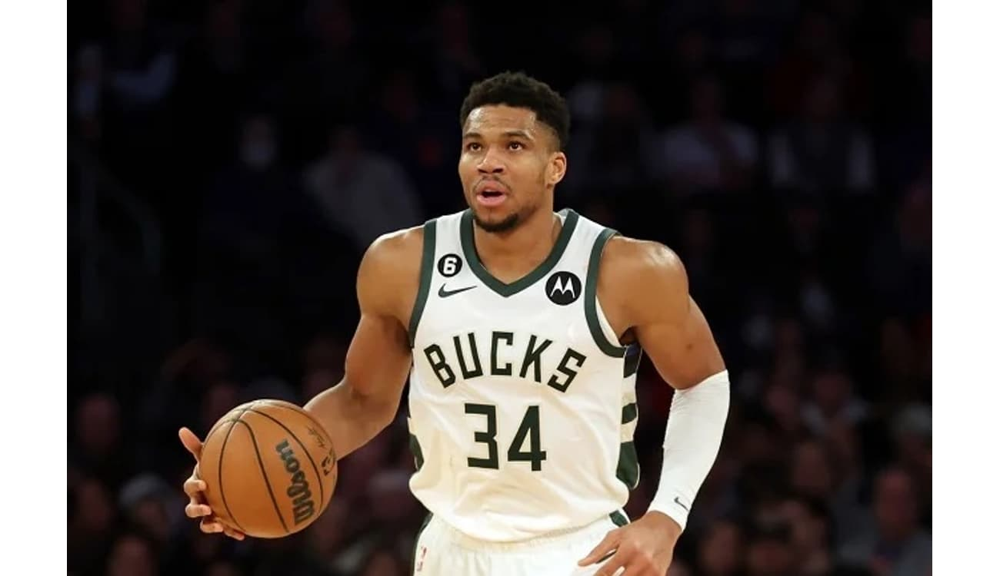

Biografia de Giannis Antetokounmpo

Giannis Antetokounmpo, nascido em Atenas, Grécia, em 6 de dezembro de 1994, é um jogador profissional de basquete que atua no Milwaukee Bucks da National Basketball Association (NBA). Conhecido por sua altura, força, athleticismo e habilidade para jogar em todas as posições da quadra, Giannis se tornou um dos jogadores mais dominantes da liga e já conquistou diversos prêmios, incluindo MVP da temporada regular da NBA, MVP das finais da NBA e campeão da NBA. Esta biografia detalha a história de vida de Giannis, desde sua infância difícil na Grécia até sua ascensão ao estrelato na NBA.
Infância
Giannis Antetokounmpo nasceu em Atenas, Grécia, no dia 6 de dezembro de 1994. Seus pais, Charles e Veronica, eram imigrantes nigerianos que vieram para a Grécia em busca de melhores oportunidades.
Giannis teve uma infância difícil. A família vivia em situação precária e ele precisava trabalhar para ajudar no sustento da casa. Apesar das dificuldades, Giannis sempre foi apaixonado por basquete e jogava sempre que podia.
Adolescência

Aos 13 anos, Giannis foi descoberto por um olheiro do Filathliakos, um clube de basquete da Grécia. Ele rapidamente se destacou pelas suas habilidades e, aos 16 anos, já estava jogando na liga profissional grega.
Em 2013, Giannis se candidatou ao draft da NBA e foi selecionado na 15ª posição pelo Milwaukee Bucks. Ele se tornou o primeiro jogador grego a ser selecionado na primeira rodada do draft desde 1986.
Carreira
Desde que chegou à NBA, Giannis se tornou um dos jogadores mais dominantes da liga. Ele já foi eleito MVP da temporada regular duas vezes (2019 e 2021), MVP das finais da NBA em 2021 e foi campeão da NBA com o Milwaukee Bucks em 2021.
Giannis é conhecido por sua altura, força, atleticismo e habilidade para jogar em todas as posições da quadra. Ele é um dos jogadores mais emocionantes de se assistir e é considerado um dos melhores jogadores da história da NBA.
Prêmios
- 2x MVP da temporada regular da NBA (2019, 2021)
- MVP das finais da NBA (2021)
- Campeão da NBA (2021)
- 6x All-Star da NBA (2017-2022)
- 2x Defensor do Ano da NBA (2019, 2020)
- Novato do Ano da NBA (2016)
Estatísticas
| Temporada | PTS | TRB | AST | STL | BLK |
|---|---|---|---|---|---|
| 2021-22 | 29.9 | 11.6 | 5.8 | 1.3 | 1.4 |
| 2020-21 | 28.1 | 11.0 | 5.9 | 1.2 | 1.2 |
| 2019-20 | 27.7 | 9.5 | 5.6 | 1.3 | 1.3 |
| 2018-19 | 27.7 | 10.0 | 4.8 | 1.3 | 2.2 |
| 2017-18 | 26.9 | 8.7 | 4.8 | 1.5 | 1.5 |
| 2016-17 | 16.9 | 7.7 | 4.2 | 1.2 | 0.9 |